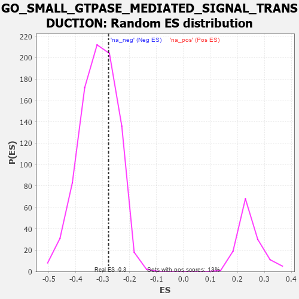

| | | Dataset | 7d |
| Phenotype | NoPhenotypeAvailable |
| Upregulated in class | na_neg |
| GeneSet | GO_SMALL_GTPASE_MEDIATED_SIGNAL_TRANSDUCTION |
| Enrichment Score (ES) | -0.27835062 |
| Normalized Enrichment Score (NES) | -0.8783997 |
| Nominal p-value | 0.68591225 |
| FDR q-value | 0.9601184 |
| FWER p-Value | 1.0 |
Table: GSEA Results Summary
 Fig 1: Enrichment plot: GO_SMALL_GTPASE_MEDIATED_SIGNAL_TRANSDUCTION
Fig 1: Enrichment plot: GO_SMALL_GTPASE_MEDIATED_SIGNAL_TRANSDUCTION
Profile of the Running ES Score & Positions of GeneSet Members on the Rank Ordered List
| PROBE | GENE SYMBOL | GENE_TITLE | RANK IN GENE LIST | RANK METRIC SCORE | RUNNING ES | CORE ENRICHMENT | | 1 | RAC2 | | | 60 | 2.442 | 0.0489 | No |
| 2 | RAB30 | | | 177 | 1.134 | 0.0604 | No |
| 3 | RHOU | | | 210 | 1.031 | 0.0802 | No |
| 4 | RHOH | | | 228 | 0.987 | 0.1009 | No |
| 5 | RIT1 | | | 359 | 0.738 | 0.1014 | No |
| 6 | PLD1 | | | 381 | 0.716 | 0.1153 | No |
| 7 | OCRL | | | 408 | 0.691 | 0.1280 | No |
| 8 | RCC1 | | | 1043 | 0.475 | 0.0585 | No |
| 9 | SRC | | | 1128 | 0.459 | 0.0585 | No |
| 10 | DOCK7 | | | 1398 | 0.410 | 0.0339 | No |
| 11 | TIMP2 | | | 1478 | 0.394 | 0.0329 | No |
| 12 | SOS1 | | | 1547 | 0.384 | 0.0332 | No |
| 13 | BRAP | | | 1660 | 0.363 | 0.0274 | No |
| 14 | ABR | | | 1812 | 0.335 | 0.0160 | No |
| 15 | NUP62 | | | 1871 | 0.324 | 0.0161 | No |
| 16 | CUL3 | | | 1893 | 0.321 | 0.0209 | No |
| 17 | HACD3 | | | 1932 | 0.315 | 0.0233 | No |
| 18 | RAF1 | | | 2011 | 0.303 | 0.0204 | No |
| 19 | GMIP | | | 2108 | 0.290 | 0.0150 | No |
| 20 | CDK2 | | | 2226 | 0.272 | 0.0064 | No |
| 21 | SHC2 | | | 2263 | 0.266 | 0.0080 | No |
| 22 | KSR2 | | | 2292 | 0.261 | 0.0105 | No |
| 23 | WASF1 | | | 2303 | 0.259 | 0.0152 | No |
| 24 | DOCK8 | | | 2341 | 0.254 | 0.0164 | No |
| 25 | MET | | | 2430 | 0.240 | 0.0108 | No |
| 26 | VAV3 | | | 2614 | 0.210 | -0.0076 | No |
| 27 | SLIT2 | | | 2724 | 0.195 | -0.0169 | No |
| 28 | BRK1 | | | 2805 | 0.183 | -0.0229 | No |
| 29 | CHP1 | | | 3089 | 0.138 | -0.0556 | No |
| 30 | RREB1 | | | 3099 | 0.137 | -0.0536 | No |
| 31 | RAB4B | | | 3157 | 0.129 | -0.0578 | No |
| 32 | TRIO | | | 3192 | 0.123 | -0.0593 | No |
| 33 | GPR18 | | | 3578 | 0.063 | -0.1067 | No |
| 34 | CBL | | | 3621 | 0.056 | -0.1107 | No |
| 35 | NF1 | | | 3713 | 0.040 | -0.1213 | No |
| 36 | RAB18 | | | 3886 | 0.013 | -0.1429 | No |
| 37 | SOS2 | | | 3963 | 0.000 | -0.1525 | No |
| 38 | SCAI | | | 3983 | -0.005 | -0.1548 | No |
| 39 | CSF1 | | | 4074 | -0.019 | -0.1658 | No |
| 40 | ABL1 | | | 4125 | -0.027 | -0.1715 | No |
| 41 | PLCE1 | | | 4127 | -0.028 | -0.1710 | No |
| 42 | CRK | | | 4139 | -0.031 | -0.1717 | No |
| 43 | GBF1 | | | 4215 | -0.044 | -0.1802 | No |
| 44 | RALA | | | 4416 | -0.079 | -0.2037 | No |
| 45 | EPS8 | | | 4474 | -0.088 | -0.2089 | No |
| 46 | RIN2 | | | 4535 | -0.101 | -0.2142 | No |
| 47 | ABI2 | | | 4554 | -0.106 | -0.2140 | No |
| 48 | NISCH | | | 4568 | -0.109 | -0.2131 | No |
| 49 | RAB21 | | | 4620 | -0.122 | -0.2168 | No |
| 50 | LIMK1 | | | 4684 | -0.136 | -0.2216 | No |
| 51 | ARF6 | | | 4704 | -0.140 | -0.2208 | No |
| 52 | RAP1B | | | 4706 | -0.140 | -0.2177 | No |
| 53 | USO1 | | | 4855 | -0.168 | -0.2326 | No |
| 54 | ARAP1 | | | 4963 | -0.191 | -0.2417 | No |
| 55 | GRAP | | | 5028 | -0.204 | -0.2451 | No |
| 56 | RGL1 | | | 5042 | -0.207 | -0.2420 | No |
| 57 | RAP2C | | | 5073 | -0.218 | -0.2408 | No |
| 58 | ITSN1 | | | 5094 | -0.222 | -0.2382 | No |
| 59 | FLCN | | | 5140 | -0.235 | -0.2385 | No |
| 60 | GPR4 | | | 5219 | -0.250 | -0.2426 | No |
| 61 | GPSM2 | | | 5228 | -0.252 | -0.2378 | No |
| 62 | KRIT1 | | | 5248 | -0.257 | -0.2342 | No |
| 63 | STK19 | | | 5297 | -0.270 | -0.2341 | No |
| 64 | RAB9B | | | 5489 | -0.316 | -0.2510 | No |
| 65 | NUCB1 | | | 5579 | -0.340 | -0.2544 | No |
| 66 | MADD | | | 5686 | -0.371 | -0.2593 | No |
| 67 | DGKI | | | 5725 | -0.384 | -0.2553 | No |
| 68 | DOCK1 | | | 5908 | -0.438 | -0.2682 | Yes |
| 69 | RAB4A | | | 5919 | -0.441 | -0.2593 | Yes |
| 70 | SGSM3 | | | 5957 | -0.457 | -0.2534 | Yes |
| 71 | RAC1 | | | 6036 | -0.484 | -0.2521 | Yes |
| 72 | DBNL | | | 6084 | -0.501 | -0.2465 | Yes |
| 73 | ROCK1 | | | 6152 | -0.520 | -0.2430 | Yes |
| 74 | CDC42 | | | 6236 | -0.548 | -0.2408 | Yes |
| 75 | FLOT1 | | | 6276 | -0.564 | -0.2327 | Yes |
| 76 | CDON | | | 6378 | -0.607 | -0.2315 | Yes |
| 77 | RALB | | | 6399 | -0.617 | -0.2198 | Yes |
| 78 | KANK1 | | | 6536 | -0.678 | -0.2213 | Yes |
| 79 | RERG | | | 6551 | -0.684 | -0.2073 | Yes |
| 80 | ROBO1 | | | 6577 | -0.699 | -0.1943 | Yes |
| 81 | RABL3 | | | 6627 | -0.727 | -0.1837 | Yes |
| 82 | DOK3 | | | 6751 | -0.786 | -0.1811 | Yes |
| 83 | NET1 | | | 6803 | -0.816 | -0.1687 | Yes |
| 84 | ARL3 | | | 7041 | -0.963 | -0.1765 | Yes |
| 85 | MFN2 | | | 7208 | -1.081 | -0.1726 | Yes |
| 86 | ABCA1 | | | 7243 | -1.113 | -0.1511 | Yes |
| 87 | NGEF | | | 7335 | -1.209 | -0.1347 | Yes |
| 88 | ARAP2 | | | 7397 | -1.261 | -0.1133 | Yes |
| 89 | LRRD1 | | | 7406 | -1.273 | -0.0849 | Yes |
| 90 | SHOC2 | | | 7546 | -1.463 | -0.0687 | Yes |
| 91 | P2RY8 | | | 7750 | -1.912 | -0.0502 | Yes |
| 92 | ARRB1 | | | 7935 | -3.377 | 0.0046 | Yes |
Table: GSEA details [plain text format]

Fig 2: GO_SMALL_GTPASE_MEDIATED_SIGNAL_TRANSDUCTION: Random ES distribution
Gene set null distribution of ES for GO_SMALL_GTPASE_MEDIATED_SIGNAL_TRANSDUCTION